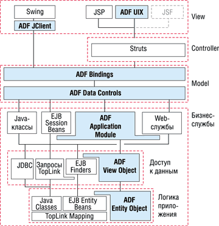
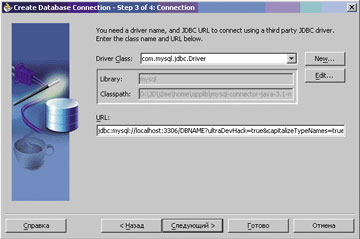
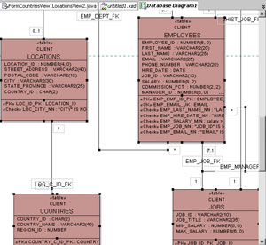
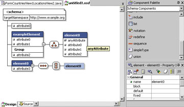
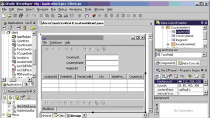
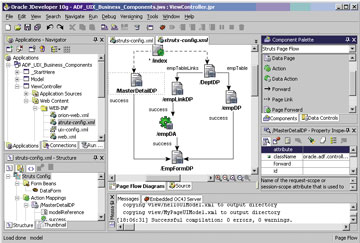

Олег Иванов
oivanov@fors.com
В конце апреля компания Oracle (http://www.oracle.com) выпустила новую версию средства разработки Java-приложений JDeveloper 10g, встроив в нее технологию Application Development Framework (ADF), позволяющую полностью визуально разрабатывать любые программы, имеющие графический интерфейс. В предыдущих версиях JDeveloper часто приходилось либо писать код вручную, либо пользоваться нестандартными и медленно работающими библиотеками. В новой версии можно полностью визуально разрабатывать приложения для работы с базами данных, причем не только с сервером баз данных Oracle, но и с любыми реляционными базами.
JDeveloper 10g полностью написан на Java и может работать на любой платформе, для которой существует виртуальная Java-машина (JVM). Пакет можно загрузить с сайта http://otn.oracle.com и использовать его по лицензии Oracle TechNet, например, в ознакомительных целях. Oracle не защищает свои продукты ключами или кодами активации и не ограничивает период ознакомления. Установка продукта сводится к разархивированию скачанного файла в любую директорию.
История JDeveloper
Первая версия JDeveloper вышла в 1998 г. Она называлась AppBuilder 1.0 и, по традиции, как все первые версии ПО Oracle, считалась не релизом, а бета-версией. К выходу релиза, который получил номер версии 1.1, Oracle переименовала среду разработки в JDeveloper. Название оказалось настолько удачным, что не меняется уже шесть лет (для сравнения: вышедший примерно в то же время Oracle Application Server успел сменить название четыре раза).
Пакет JDeveloper 1.1 работал на последней в то время версии JDK 1.1 и занимал 50 Мбайт на жестком диске. Прототип среды был лицензирован у Borland (http://www.borland.com). Позже Borland/Inprise стала дорабатывать свою ветку программного продукта, который сейчас выпускается под названием JBuilder; по функциональности он схож с JDeveloper.
В процессе развития средств программирования интерфейс, набор возможностей и даже комбинации клавиш для быстрого вызова часто используемых функций стали унифицированными. Естественный отбор заставил разработчиков программных сред придавать своим продуктам стандартный набор возможностей. Благодаря этому программисты, имеющие опыт работы с одной оболочкой, могут быстро освоить другие. Помимо набора стандартных средств, среды разработки приложений включают библиотеки процедур, упрощающие программирование. Например, приложения, работающие с базами данных, в большинстве случаев состоят из стандартных форм, выдающих данные из строк таблицы. Для создания таких приложений на Java и предназначена среда разработки Oracle JDeveloper.
Структура приложения для работы с базами данных
На рис. 1 показана предлагаемая Oracle структура приложений для работы с данными. Отметим, что объекты ADF Entity и ADF View присутствовали и в предыдущей версии и назывались тогда Business Components for Java (BC4J). Компоненты представляют собой отражения таблиц базы данных, расположенные на стороне приложения и доступные локально. Например, если нужно вставить строку в таблицу, то вызывается метод (функция) на объекте Entity, так что программисту не нужно кодировать доступ к базе по JDBC. В сущности, это аналог EJB, DOA и других подобных технологий. Однако в предыдущей версии отсутствовал слой ADF Data Controls, который и позволяет создавать приложение полностью в визуальном режиме.
|  |
| Рис. 1. Структура ADF-приложений.
|
В версиях JDeveloper 1.1-3.2 аналогом Data Controls были компоненты InfoBus. Технология InfoBus была разработана компанией Sun, но не получила распространения. ADF отличается от нее тем, что в InfoBus использовались модифицированные swing-компоненты, а в ADF источники данных привязываются к стандартным swing-объектам. Различные по своей сути технологии бизнес-уровня и графики были четко разделены, что дало возможность избежать ошибок и проблем с производительностью. Разработчики Oracle пришли к технологии ADF методом проб и ошибок. Просчеты на самом первом этапе моделирования технологической схемы привели к переработке всех последующих этапов.
Теперь и оконные, и Web-приложения можно создавать в визуальном режиме с высокой степенью автоматизации. Для этого подходят библиотеки тегов, разработанные Oracle, Apache или любые другие. В технологии ADF программист сначала создает бизнес-логику приложения. Например, если приложение будет работать с таблицами базы данных, то, чтобы не писать код запросов SQL вручную, можно использовать библиотеки BC4J. Программисту не нужно знать, как этот объект будет обновлять данные в таблице, он работает с ним как со стандартным Java-объектом. Большую часть логики можно настроить визуально, не написав ни строчки кода.
Процесс создания Web-приложения
Application workspace
Первый шаг - создание приложения (Application workspace). После запуска JDeveloper появится рабочая область со списком приложений, редактором кода и окном сообщений. Список приложений выдается в виде дерева и называется навигатором.
Рабочая область - это промежуточный уровень. Она будет содержать проекты, которые относятся к одному приложению, являются его частями или независимыми модулями. Допустим, разрабатывается отдельное Web-приложение и в нем есть ссылки на странички из других приложений. Если другое приложение находится в той же рабочей области, то при тестировании оба приложения будут загружены во встроенный контейнер Oracle Containers for Java (OC4J), и можно будет протестировать связи между ними.
Но чаще встречается другая ситуация. Приложение имеет несколько уровней - бизнес-логику и презентационную часть. Бизнес-логика может быть создана другой группой программистов и использовать специфические технологии. Если включить ее в проект как часть его, может возникнуть путаница - многим известно, что получается, когда пытаешься интегрировать чужой код в свое приложение. Отдельные проекты помогают сосредоточиться только на текущем задании, не вникая в особенности других модулей. В технологиях J2EE четко указываются конфигурационные файлы, которые нужно менять, чтобы настроить и использовать приложения J2EE. Для использования чужих модулей достаточно знать их спецификацию. Файлы конфигурации имеют легко читаемый формат XML, поэтому многие параметры интуитивно понятны.
Приложения и проекты
В Мастере Application workspace появилась возможность задать набор технологий, которые будут использованы в проектах приложения. Например, в workspace можно автоматически сгенерировать проекты с UML-моделью или конфигурацией Struts создаваемого приложения.
Второй шаг после создания Application workspace - добавление проекта в приложение. Проект - это набор исходных файлов и библиотек, которые должны совместно компилироваться и использоваться в работе приложения. Обычно проект содержит законченное приложение или модуль большого приложения, с которым можно работать независимо. Параметры проекта хранятся в одном XML-файле. Многие средства разработки имеют сходные конфигурационные файлы собственного формата. Эти файлы несовместимы друг с другом, так как возможности сред программирования различны и стандарта здесь не существует.
Соединение с базой данных MySQL
Третий шаг - создание соединения с базой данных, для работы с которой разрабатывается приложение. JDeveloper поддерживает любые базы данных, для которых существуют драйверы JDBC. Достаточно просто загрузить библиотеку драйвера (она обычно занимает 2-5 Мбайт и предоставляется на сайте производителя базы). Драйвер для собственной базы данных Oracle, разумеется, включила в дистрибутив JDeveloper.
Соединение создается в разделе Connections. Из рис. 2 видно, какие параметры нужно указать для подключения к базе данных MySQL. После создания соединения можно просматривать таблицы и при желании редактировать схему базы данных.
|  | Рис. 2. Параметры соединения с MySQL.
|
JDeveloper может отображать схему любых реляционных баз данных в виде ER-диаграммы (рис. 3). Она по умолчанию не отображается при просмотре списка объектов. Нужно создать новую диаграмму объектов, перейти в раздел соединения, раскрыть дерево с таблицами схемы в любом из соединений, выделить все таблицы и перетащить в рабочую область диаграммы (на рис. 3 показан результат).
|  | Рис. 3. ER-диаграмма схемы базы данных.
|
Часто у создателей JDeveloper не хватает времени для создания хорошей документации. Проблема в том, что для эффективного изучения среды разработки нужно показать, как выполнять стандартные действия. Для этого больше подходят флэш-ролики, а не статические страницы документации. Разработчики представили на сайте Oracle TechNet десяток роликов, которые демонстрируют некоторые (но не все) возможности среды разработки. Выпущен также курс обучения Oracle JDeveloper 10g: Build Applications with ADF.
Мастер логики приложения
После создания проекта можно вызвать Мастер конфигурации бизнес-компонентов (BC4J). Он подсоединится к базе данных и запросит список таблиц, с которыми будет работать приложение. JDeveloper хранит параметры соединения с базами данных. Их можно в дальнейшем использовать в процессе тестирования или для создания новых приложений. Помимо баз данных, можно хранить соединения с серверами приложений не только собственного производства, такими, как OC4J или iAS, но и Tomcat, JBoss, Orion. Соединение с серверами приложений позволяет легко установить в них Web-приложения прямо из JDeveloper.
Мастер BC4J отслеживает связи между таблицами базы данных и создает наборы объектов, которые точно отражают схему базы данных. На выходе Мастер создает конфигурационные файлы в формате XML и Java-классы. Наиболее часто встречающиеся параметры хранятся в XML-файлах. Их не нужно редактировать вручную, средствами JDeveloper это можно сделать визуально. Большая часть логики не требует написания кода, однако некоторые редко встречающиеся задачи обработки информации можно реализовать, добавив код в Java-файлы, которые создает Мастер BC4J.
Протестировать бизнес-логику компонентов BC4J можно с помощью простого swing-клиента, встроенного в JDeveloper. Он вызывается нажатием правой кнопки мыши через строчку "Test…" в выпадающем меню, если в навигаторе проектов выбрать модуль бизнес-компонентов. Отметим, что этот клиент не вынесен в меню и панель управления JDeveloper, и вероятность того, что его обнаружит программист, только начинающий работать с JDeveloper, весьма мала. Однако других недочетов такого типа в JDeveloper практически нет.
Диаграммы в JDeveloper
В JDeveloper есть мощная подсистема создания модели будущего приложения. Известно, что просчеты на этапе моделирования приводят к потере времени на последующих этапах разработки. Поддержка моделирования состоит из UML-диаграмм, диаграммы BC4J-компонентов, диаграммы XML-схем и компонентов Struts.
UML-диаграмма используется для моделирования Java-классов будущего приложения. Классы отображаются в виде прямоугольников со свойствами классов и связями между ними. При большом наборе классов диаграмма предоставляет программисту возможность взглянуть на приложение в целом, что повышает производительность разработки. На основе диаграммы можно сгенерировать Java-классы, которые появятся в текущем проекте.
BC4J-диаграмма позволяет смоделировать схему будущего приложения. Если в базе данных нет таблиц, т. е. разработка выполняется "с нуля", можно создать функциональную модель приложения. На основе BC4J-диаграммы можно создать объекты базы данных - таблицы, представления, ограничения целостности и сам набор BC4J-компонентов.
Одно из новшеств последней версии JDeveloper - визуальный редактор схем XML (рис. 4). Структура документов проста - это дерево, однако число ветвей в дереве большинства документов достаточно велико. Визуальный редактор делает создание схем комфортным. Формат XML известен уже несколько лет, но средств автоматизации создания документов до сих пор немного.
|  | Рис. 4. Визуальный редактор XML-схем.
|
Интерфейсы
После визуальной настройки компонентов BC4J программист выбирает тип графического интерфейса: оконный или Web, а также технологию, с помощью которой будет реализована эта часть программы. Для Web-приложений можно использовать библиотеки тегов Apache Struts или Oracle UIX, а для оконных интерфейсов - компоненты awt или swing. Компоненты awt созданы раньше swing, и возможности их ограниченны, поэтому сейчас редко они используются в приложениях. Их имеет смысл применять, если создается приложение для работы апплетов в старых версиях JVM 1.1, где еще не было swing-компонентов. Эти версии до сих пор встречаются в браузерах, так как последняя версия виртуальной машины, которую выпустила компания Microsoft для своего браузера, основана на JDK 1.1.
Оконный интерфейс
Первый тип интерфейса - стандартное оконное приложение. В этом случае используют библиотеку графических компонентов, называющуюся swing. Библиотека содержит такие компоненты, как кнопки, текстовые поля, окна, панели. На рис. 5 (в правой части) в Data Control Palette видны отображения уровня модели ADF. При перемещении компонентов на поле графического редактора в центре рисунка JDeveloper автоматически добавит в программу код привязки.
|  | Рис. 5. Визуальный редактор оконного приложения.
|
Web-интерфейс
Второй тип графического интерфейса - стандартные HTML-страницы. Конечно, они динамические, т. е. генерируются "на лету" и каждый раз имеют разное содержание. Вспомним, что Java как язык программирования стал популярным именно благодаря Интернету. На нем писались первые программы, оживлявшие Web-страницы, - апплеты. Позже появились другие технологии, и нишу апплетов заняла технология Macromedia Flash.
Другая технология, поставившая Java вне конкуренции, тоже пришла из глобальной сети. Это технология сервлетов и Java Server Pages (JSP). Когда мигающие картинки перестали быть новинкой и стали даже раздражать пользователей сети, возникла потребность в быстрой и удобной разработке программ для Web. На эту роль претендуют Perl, PHP, ASP и сервлеты/JSP. Именно сервлеты, часть технологии J2EE, позволяют быстро создавать мощные Web-приложения. В отличие от скриптовых языков, таких, как PHP, Java-программы сохраняют в памяти сервера состояние сессии каждого пользователя - значения переменных и любые данные, с которыми работает пользователь. Еще одно отличие состоит в том, что все запросы пользователей обслуживают нити, а не отдельные процессы. Это делает работу Java-приложений чрезвычайно быстрой.
Диаграмма связей компонентов Apache Struts представляет собой визуальный редактор файла конфигурации struts-config.xml (рис. 6). Этот файл используется для указания последовательности прохождения запросов пользователя и передачи управления различным JSP. Редактор параметров позволяет увидеть приложение в виде потоков событий.
|  | Рис. 6. Визуальное редактирование конфигурации Apache Struts.
|
Компоненты Struts часто используются при создании Web-приложений на Java. Логика работы Web-приложений значительно отличается от логики клиент-серверных приложений. Если в последних в качестве объекта выступает форма, в которой задаются реакции на события пользователя, то в Web-приложениях пользователь имеет дело со статичными страницами. Логика работы Web-приложений заключается в переходе между страницами в зависимости от выбора, сделанного пользователем. Диаграмма логики Web-приложения включает страницы и условные переходы между ними или поток действий пользователя - clickstream. Диаграмма представляет собой уровень абстракции над самим кодом приложения. Аналогией может служить ER-диаграмма для создателей приложений, работающих с базами данных.
Компания Sun при разработке Java не учла, что на практике, создавая даже не самые сложные проекты, программисты будут вынуждены рисовать такие диаграммы. Поэтому в наборе стандартов, составляющих J2EE, диаграммы потока действий отсутствуют. Консорциум Apache предложил технологию, позволяющую при правильном использовании упростить создание Web-приложений. Помимо диаграммера в нее включено много других средств. Эта технология получила название Struts, или "подпорки". И они действительно "подпирают" технологию сервлетов/JSP.
Компиляция и тестирование
Последний этап - компиляции и тестирования приложения - проблем не вызывает. Встроенный компилятор и отладчик работает без ошибок. Для сложных проектов и создания рабочего дистрибутива JDeveloper предлагает собственные Мастера, но поддерживает и Apache Ant. Ant написан на Java и управляется конфигурационным файлом формата XML. В этом файле могут быть указаны практически любые действия для создания приложения (для программ на языке C используется термин make), например, компиляция и копирование исходных файлов, создание архивов, запуск программ.
JDeveloper 10g автоматически генерирует конфигурационный файл Ant и может его использовать в процессе тестирования приложения. Таким образом, большая часть свойств проекта может мигрировать в файл стандартного формата. Миграции способствует тот факт, что JDeveloper 10g не поддерживает виртуальную машину версии 1.5, которая сейчас находится в стадии бета-тестирования. Вероятно, силы создателей JDeveloper были брошены на доработку ADF-компонентов, и встроенный компилятор JDeveloper остался без изменений.
Тестирование приложения во встроенном контейнере OC4J проблем не вызывает. Конфигурационные файлы контейнера обновляются автоматически. Если возникают проблемы с подсоединением к базе данных, то нужно проверить параметры соединения в файле data-sources.xml.
Контейнеры для работы J2EE-приложений
При тестировании Web-приложений в JDeveloper автоматически запускается встроенный сервер приложений Oracle Containers for Java (OC4J). Нет необходимости устанавливать или конфигурировать дополнительное ПО, как иногда приходится делать с другими средствами разработки. OC4J не отличается от встроенного в Oracle Application Server 9iR2.
Java-программы не могут выполняться в операционной системе напрямую, для их выполнения требуется прослойка между приложением и ОС, называемая виртуальной машиной Java (JVM). Если в ОС установлена прослойка JVM, то в ней будут работать любые Java-программы.
Идея исполнения программ через дополнительную прослойку понравилась компании Sun; в итоге Web-приложения (например, сервлеты), не могут работать напрямую даже в виртуальной машине. Им требуются дополнительные функции, которые обеспечивают программы-"контейнеры". Поскольку большинство функций, таких, как прослушивание порта по протоколу HTTP, выдача страниц, проверка прав доступа, подсоединение к базам данных, используются почти во всех Web-приложениях, от программиста не требуется их реализовывать. Они уже написаны разработчиками контейнеров, так что программисту остается сконцентрироваться на написании логики своего приложения.
Самые известные контейнеры - это Apache Tomcat, JBoss, Ironflare Orion, Mortbay Jetty и OC4J. OC4J лицензирован Oracle у Ironflare и не сильно отличается от последнего. Это удобно тем, что почти вся информация об особенностях Orion, накопленная в сообществе программистов, применима к OC4J. Использование контейнеров сторонних разработчиков популярно в Java-сообществе. Например, Sun выбрала Tomcat как базовую платформу для тестирования новшеств J2EE, а JBoss в качестве ядра использует Jetty и Tomcat.
Все известные контейнеры сами представляют собой Java-программы. Получается, что для запуска Web-приложений нужна JVM, в которой будет работать контейнер, а в нем, в свою очередь, будут работать сервлеты. Может показаться, что это уменьшает скорость выполнения сервлетов, но на деле это не так. В исполняемых программах, написанных на языке C, имеются те же самые прослойки в виде программных интерфейсов API, только они находятся внутри программы или привязаны к ней. Программисту при этом приходится работать с кодом большого объема, и вряд ли он более опытен, чем создатели контейнеров. Поэтому вероятность ошибок в сервлетах оказывается намного меньше. Кроме того, код получается компактным. Все это удобно и для программиста, и для заказчика программ.
В целом от работы с JDeveloper 10g остается приятное впечатление. Среда содержит много возможностей, не видимых поверхностному взгляду. Технология разработки приложений ADF позволяет быстро и в визуальном режиме создавать сложные приложения.